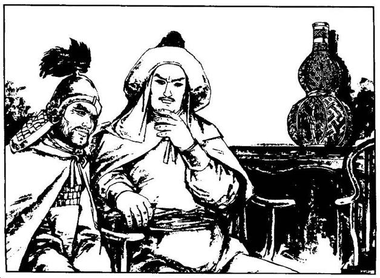

九
以上，是甲申之变亦即北京城陷后的投降情形。等到翌年乙酉之变亦即南京城陷时，又有一次，文豪钱谦益便是领衔者之一。这先后两次投降高潮，对象不同。北京之降，降于本国暴动者；南京则降于异国入侵军。在今人眼里，后者严重性大概远远超过前者。明人未必这么看，未必认为投降李闯的罪过，比投降满清要轻。这也是古代伦理的独特处。盛传慈禧说过一句话：“宁赠友邦，不予家奴”，历来作为她是卖国贼的证据，其实这种思维在旧伦理中极其自然，我们倘若吃透了“忠”的各层面关系与含义，即知必然如此，与爱国或卖国反而没什么联系，比如“样板戏”里有台词：“三爷最恨被共军逮着过的人！”心理与慈禧是相通的。
从洪承畴降清算起，投降问题横穿两朝（崇祯、弘光），令人焦头烂额。对于视“名节”为压箱底之宝的明朝来说，是沉重打击。但杨士聪却有别致的见解：
商周之际，仅得首阳两饿夫。北都殉节，几二十人，可谓盛矣。
自开辟以至于今，兴亡代有，万无举朝尽死之理。[112]
首阳两饿夫，指伯夷、叔齐兄弟，他们都是商末孤竹君之子，武王伐纣后，耻食周粟，饿死首阳山。杨士聪说，较之商亡仅两人殉之，北京之陷有近二十人死节，还有什么不满意呢？兴亡代代有，也并未见过满朝文武全都死光的情形。
他说的乃是实话。跟过往比，乃至包括后世，明代士大夫的“名节”真是最过硬的了。明末殉国者之多，数量或抵得过以前历代总和。弘光政权幻灭后，殉国者成批涌现，仅本文提到的一些人，如史可法、左懋第、祁彪佳、顾杲等，后都自尽而死。虽然我们知道此一现象深受名教影响，但对死难者本人，我还是葆有很大的敬意；因为曾经考察过他们的事迹、思想以及时代背景，从而了解做出那样的举动并不都是出于迂腐。言及于此，也不能不从另一端感到些困惑。例如降清且助其平定中原的洪承畴，当时与吴三桂是一文一武两个头号“大汉奸”，但二百多年后，这种评价消失了，而代以“功在千秋”。孙中山有《赞洪文襄》一诗，称道他“满回中原日，汉戚存多时”；他还这样回答洪氏后人的提问：
余致力唤起民众推翻满清，目的在于推翻其腐败帝制。洪文襄降清，避免了生灵涂炭，力促中华一统，劳苦功高。[113]
政治家思路果然实用。不过“满回中原”、“力促中华一统”或有之，“避免了生灵涂炭”则是没有的事，了解过清兵南下史的读者，心中都有一本账。关键是，历史究竟有无一定之理？是否能以结果论（实利）而朝秦暮楚？何况对洪承畴的这一评价，每一句我看亦很适用于吴三桂，为什么不把他也一道“平反”呢，是因他后来又举兵叛清吗？再有，这样评价洪承畴，置当年快意嘲讽洪承畴、为之杀害的少年英雄夏完淳于何地？这都令人困惑。
世间历来有“英雄”和“普通人”之分。我觉得恰当的态度是，对英雄应有英雄的尊重，对普通人也应有普通人的尊重。这不同的尊重，各自体现了一种社会公正与善意。但在中国，有时两种尊重都不存在。
作为个人行为，投降或不投降，受制于每个人对生命价值的理解与追求，以及气质、个性等等因素，这些方面千差万别，既无一定之道理，也很难一概而论，该褒该贬，要结合每个人具体情况来看。
个人行为之外，还有一个国家伦理层面，我们需要讨论的也就是这个层面。国家伦理，作用在于鼓励、引导、规范社会和人民价值观，告诉他们什么是正确的，以及怎样做符合社会的共同利益。就此而言，投降不论何时何地，都不是国家所愿面对的情形，因为它与失败相联系，是不幸的境地。但在不赞赏的同时，能否基于现实，有所容纳、谅解与接受，对国家伦理而言，却是有关理性、博大和善意的更深刻考验。
姑以“贪生怕死”的美国人为例。朝鲜战争期间，美军士兵随身携有“投降书”，是一个长方形布质印刷品，上端是美国国旗，下面同时用多种文字印了一句话，大意为“我是美国人，请不要杀我……”云云。换言之，美国大兵未曾临阵，政府却先替他们准备好投降书，且附以国旗给予郑重认可。比这略早几年，珍珠港事件后，日军大举进攻菲律宾，美菲联军抵抗。到1942年4月，终于不支。5月3日，美军司令温赖特中将奉罗斯福总统之命，电令菲全境军队停止抵抗，并宣布拒绝投降者将以逃兵论处。
他们显然不以投降为美事，但万一事不可为，也并不以投降为耻。很多非常注重荣誉的民族，都曾经能够投降。例如二战时德国；甚至文化上与我们相仿、视投降为奇耻大辱的日本，也能做出无条件投降的决定。在西方价值观中，投降虽为可悲结局，同时却也配得上严肃的尊重。为使投降安全而体面，他们甚至聚在一起制订了优待俘虏的国际公约。
中国文化心理不会赞同这一点，我们对于投降从骨子里抱以蔑视，甚至历来有杀降传统。秦将白起曾经坑杀赵国降卒四十万；晚至十九世纪中期，李鸿章也将数万太平天国降军尽行诛灭。当时，李的盟友、英国人“常胜军”统帅戈登异常震惊，觉得只有野蛮人方能至此。他不知道，以中国文化心理，一旦投降即人格丧尽，不复可享“人”的尊重。
之如此，关键在于投降与道德形成了绑定：投降意味着不忠、背叛，而非绝境下对生命的最后一点尊重。这是根源。
当美国大兵掏出投降书、举起双手时，无论他本人抑或其政府、国家与人民，都不认为这一行为代表背叛。他只是无力或不必继续去做某种徒劳的事情。就本来意义而言，投降只是当事不可为时，一种以求自我保护的处置。小至个人，大到国家，都可能采取。它和品格、道德无关。不仅如此，从国家伦理层面上不歧视投降，包含了对个人生命的尊重。它承认，生命面临危险时个人有权将其安危置于首位，只要这对于国家并无实际的损害。如果更进一步，国家应该认为，公民为保护其生命安全所采取的行动，不但不违背，相反恰好符合国家利益。
帝制中国却没有这种观念，它认为个人是皇权的“私有物”，其生命、身体及一切概不属于自己，他们没有任何自我权益需要考虑。基于单方面索取的关系，皇权对其子民提出了终极占有的要求。子民之于君上，不单为之服务、工作，也随时为之献上生命。为保证这种关系，建立了一整套人身依附的伦理秩序，臣为君死、子为父死、妇为夫死，使社会——从家庭到国家——都纳入同样的逻辑，由此建成一个“名节”系统。
观察这个“名节”系统，我们除了从中看到中国特有的经济、社会、文化的形态，也看到了历史的阴影。换言之，这套东西对中国来说，并非自古而然，而是随着历史变化，逐渐走到这一步。在汉唐盛世，还没有这么严苛的“名节”系统；它不是汉文明上升期的产物，却明显随着宋明悲情历史而凸显和强化。十六世纪起，欧洲经历过一次宗教改革；早其四五个世纪，中国实际上也有类似的过程，所不同的是，欧洲从中得到解放，中国得到的反而是束缚。从宋儒到明儒，古典儒学变为新儒学，其结果，中国社会伦理愈益保守。而这一过程，恰逢汉族中国两次亡国。我们无法判断在这种历史结局与国家伦理之间，什么是因什么是果，抑或互为因果；但显然，悲情愈来愈多地投射于民族心理。降附现象在明末唤起的反应，肯定与自信无关，而是十足悲情的流露，某种输不起或自闭的因素已潜入我们的气质。
这过程后来还在继续，还有进一步的发展。作为二十世纪中国人，我们清楚明末的情况其实不算最糟，类似杨士聪那种人当时尚能“善终”，如在当代，难乎其难。五十年代至七十年代，从潘汉年到刘少奇，多少人含冤于“叛徒”名下。“叛徒”、“投降”这类罪名，杀伤力之大无以过之，扣上此帽，连国家主席也无望生还。1975年8月4日，毛泽东又就《水浒》谈话：“《水浒》这部书，好就好在投降，做反面教材，使人民都知道投降派。”[114]江青、姚文元等即以此攻周恩来、邓小平。9月20日，周恩来接受最后一次大手术，推入手术室前，他奋力喊道：“我不是投降派！”[115]其中，有政治的严酷，更有历史的沉重。

连环画中的刘宗敏形象，崔君沛绘。
刘宗敏，闯军头号大将，他在北京拷掠百官甚酷，赵士锦脱身后所写《甲申纪事》一书，记述亲身经历与见闻，多涉刘宗敏所为。
[1] 杨士聪《甲申核真略》，《甲申核真略（外二种）》，浙江古籍出版社，1985，第7页。
[2] 徐鼒《小腆纪年附考》，中华书局，2006，第250页。
[3] 杨士聪《甲申核真略》，《甲申核真略（外二种）》，浙江古籍出版社，1985，第7页。
[4] 计六奇《明季北略》，中华书局，1984，第603页。
[5] 吴伟业《左谕德济宁杨公墓志铭》，《甲申核真略（外二种）》，浙江古籍出版社，1985，第57—59页。
[6] 杨士聪《甲申核真略》，《甲申核真略（外二种）》，浙江古籍出版社，1985，第9页。
[7] 马其昶《桐城耆旧传》，黄山书社，1990，第184—185页。
[8] 抱阳生《甲申朝事小纪》，书目文献出版社，1987，第639—644页。
[9] 彭孙贻《平寇志》卷之十，上海古籍出版社，1984，第224页。
[10] 计六奇《明季北略》，中华书局，1984，第458页。
[11] 计六奇《明季北略》，中华书局，1984，第474页。
[12] 彭孙贻《平寇志》卷之九，上海古籍出版社，1984，第217页。
[13] 计六奇《明季北略》，中华书局，1984，第472页。
[14] 《明季北略》记为钱位坤。
[15] 彭孙贻《平寇志》卷之十，上海古籍出版社，1984，第224页。
[16] 顾公燮《丹午笔记》一席记闻，《丹午笔记·吴城日记·五石脂》，江苏古籍出版社，1999，第26—27页。
[17] 彭孙贻《平寇志》卷之十一，上海古籍出版社，1984，第253页。
[18] 计六奇《明季北略》，中华书局，1984，第523页。
[19] 彭孙贻《平寇志》卷之十一，上海古籍出版社，1984，第253页。
[20] 文秉《烈皇小识》，《明季稗史初编》，上海书店，1988，第180页。
[21] 《明宪宗实录》卷二九二，国立北平图书馆红格钞本影印本，1962，第4955页。
[22] 计六奇《明季北略》，中华书局，1984，第473页。
[23] 计六奇《明季北略》，中华书局，1984，第473页。
[24] 计六奇《明季北略》，中华书局，1984，第640页。
[25] 杨士聪《甲申核真略》，《甲申核真略（外二种）》，浙江古籍出版社，1985，第19页。
[26] 计六奇《明季北略》，中华书局，1984，第601—602页。
[27] 赵尔巽等《清史稿》卷二百四十五列传三十二，中华书局，1977，第9633页。
[28] 张廷玉等《明史》卷二百四十四，中华书局，1974，第6337页。
[29] 张廷玉等《明史》卷二百四十四，中华书局，1974，第6337页。
[30] 计六奇《明季北略》，中华书局，1984，第609页。
[31] 张廷玉等《明史》卷二百四十四，中华书局，1974，第6337页。
[32] 计六奇《明季北略》，中华书局，1984，第611—612页。
[33] 彭孙贻《平寇志》卷之九，上海古籍出版社，1984，第220页。
[34] 计六奇《明季北略》，中华书局，1984，第612页。
[35] 张廷玉等《明史》卷二百四十四，中华书局，1974，第6337页。
[36] 赵尔巽等《清史稿》卷四百八十四列传二百七十一，中华书局，1977，第13325页。
[37] 李清《三垣笔记》，中华书局，1997，第53页。
[38] 抱阳生《甲申朝事小纪》，书目文献出版社，1987，第39页。徐鼒《小腆纪年附考》，中华书局，2006，第222页。
[39] 余怀《板桥杂记》（刘如溪点评），青岛出版社，2002，第45页。
[40] 孟森《横波夫人考》，《心史丛刊》二集，大东书局，民国二十五年（1936），第39页。
[41] 赵尔巽等《清史稿》卷四百八十四列传二百七十一，中华书局，1977，第13324页。
[42] 计六奇《明季北略》，中华书局，1984，第605页。
[43] 计六奇《明季南略》，中华书局，1984，第500页。
[44] 计六奇《明季南略》，中华书局，1984，第500页。
[45] 抱阳生《甲申朝事小纪》，书目文献出版社，1987，第39—40页。
[46] 彭孙贻《平寇志》卷之十，上海古籍出版社，1984，第221页。顾公燮《丹午笔记》遇变纪略，《丹午笔记·吴城日记·五石脂》，江苏古籍出版社，1999，第38页。
[47] 徐鼒《小腆纪年附考》，中华书局，2006，第250—251页。
[48] 彭孙贻《平寇志》卷之十，上海古籍出版社，1984，第221页。
[49] 抱阳生《甲申朝事小纪》，书目文献出版社，1987，第28页。
[50] 彭孙贻《平寇志》卷之九，上海古籍出版社，1984，第215—216页。
[51] 彭孙贻《平寇志》卷之九，上海古籍出版社，1984，第219页。
[52] 计六奇《明季北略》，中华书局，1984，第605页。
[53] 计六奇《明季南略》，中华书局，1984，第200页。
[54] 计六奇《明季北略》，中华书局，1984，第605页。
[55] 眉史氏《复社纪略》，中国历史研究社编《东林始末》，神州国光社，1947，第181页。
[56] 彭孙贻《平寇志》卷之十一，上海古籍出版社，1984，第246页。
[57] 抱阳生《甲申朝事小纪》，书目文献出版社，1987，第44页。
[58] 彭孙贻《平寇志》卷之十一，上海古籍出版社，1984，第247页。
[59] 彭孙贻《平寇志》卷之十一，上海古籍出版社，1984，第246页。
[60] 计六奇《明季北略》，中华书局，1984，第612页。
[61] 抱阳生《甲申朝事小纪》，书目文献出版社，1987，第44页。
[62] 抱阳生《甲申朝事小纪》，书目文献出版社，1987，第44页。
[63] 计六奇《明季南略》，中华书局，1984，第256页。
[64] 计六奇《明季北略》，中华书局，1984，第164—165页。
[65] 朱希祖《书刘刻贵池本留都防乱揭姓氏后》，《明季史料题跋》，中华书局，1961，第23—24页。
[66] 徐鼒《小腆纪年附考》，中华书局，2006，第177页。
[67] 徐鼒《小腆纪年附考》，中华书局，2006，第177页。
[68] 祁彪佳《祁忠敏公日记》，《历代日记丛钞》第八册，学苑出版社，2005，第449页。
[69] 祁彪佳《祁忠敏公日记》，《历代日记丛钞》第八册，学苑出版社，2005，第443页。
[70] 祁彪佳《祁忠敏公日记》，《历代日记丛钞》第八册，学苑出版社，2005，第450页。
[71] 祁彪佳《祁忠敏公日记》，《历代日记丛钞》第八册，学苑出版社，2005，第451页。
[72] 祁彪佳《祁忠敏公日记》，《历代日记丛钞》第八册，学苑出版社，2005，第451页。
[73] 祁彪佳《祁忠敏公日记》，《历代日记丛钞》第八册，学苑出版社，2005，第454页。
[74] 祁彪佳《祁忠敏公日记》，《历代日记丛钞》第八册，学苑出版社，2005，第454页。
[75] 祁彪佳《祁忠敏公日记》，《历代日记丛钞》第八册，学苑出版社，2005，第455—456页。
[76] 祁彪佳《祁忠敏公日记》，《历代日记丛钞》第八册，学苑出版社，2005，第456页。
[77] 祁彪佳《祁忠敏公日记》，《历代日记丛钞》第八册，学苑出版社，2005，第457页。
[78] 祁彪佳《祁忠敏公日记》，《历代日记丛钞》第八册，学苑出版社，2005，第458页。
[79] 徐鼒《小腆纪年附考》，中华书局，2006，第177页。
[80] 徐鼒《小腆纪年附考》，中华书局，2006，第177页。
[81] 班固《汉书》卷八十七下，中华书局，1962，第3585页。
[82] 班固《汉书》卷五十四，中华书局，1962，第2454—2457页。
[83] 脱脱等《宋史》卷二百七十二，中华书局，1977，第9305页。
[84] 朱熹《四书章句集注》“论语·八佾第三”，中华书局，1983，第66页。
[85] 朱熹《四书章句集注》“论语·学而第一”，中华书局，1983，第48页。
[86] 朱熹《四书章句集注》“论语·子路第十三”，中华书局，1983，第146页。
[87] 朱熹《四书章句集注》“论语·颜渊第十二”，中华书局，1983，第140页。
[88] 朱熹《四书章句集注》“论语·宪问第十四”，中华书局，1983，第149页。
[89] 朱熹《四书章句集注》“孟子·滕文公章句上”，中华书局，1983，第260页。
[90] 朱熹《四书章句集注》“孟子·告子章句上”，中华书局，1983，第336页。
[91] 朱熹《四书章句集注》“孟子·尽心章句上”，中华书局，1983，第358页。
[92] 朱熹《四书章句集注》“孟子·离娄章句下”，中华书局，1983，第290页。
[93] 朱熹《四书章句集注》“孟子·离娄章句下”，中华书局，1983，第291页。
[94] 郭沫若《十批判书》，《郭沫若全集》历史编第2卷，人民文学出版社，1982，第170页。
[95] 它们是西汉、东汉、宋、明、清。
[96] 黎靖德辑《朱子语类》卷十三学七力行，《朱子全书》第十四册，上海古籍出版社、安徽教育出版社，2002，第394页。
[97] 黎靖德辑《朱子语类》卷十三学七力行，《朱子全书》第十四册，上海古籍出版社、安徽教育出版社，2002，第399页。
[98] 黎靖德辑《朱子语类》卷十三学七力行，《朱子全书》第十四册，上海古籍出版社、安徽教育出版社，2002，第399页。
[99] 黎靖德辑《朱子语类》卷十三学七力行，《朱子全书》第十四册，上海古籍出版社、安徽教育出版社，2002，第401页。
[100] 杨士聪《甲申核真略》，《甲申核真略（外二种）》，浙江古籍出版社，1985，第8—9页。
[101] 卢泾才《杀贼誓言》，《南明史料（八种）》，江苏古籍出版社，1999，第597页。
[102] 刘宗周《恸哭时艰立伸讨贼之义疏》，《刘子全书》卷之十八奏疏，华文书局股份有限公司影印本，1968，第1258页。
[103] 宗敦一《大彰衮钺事疏》，《南明史料（八种）》，江苏古籍出版社，1999，第657页。
[104] 史可法《论从逆南还疏》，《史忠正公集》卷一，商务印书馆，民国二十五年十二月，第11页。
[105] 计六奇《明季北略》，中华书局，1984，第607页。
[106] 计六奇《明季北略》，中华书局，1984，第621页。
[107] 计六奇《明季北略》，中华书局，1984，第646页。
[108] 顾杲《上兄棻书》，《丹午笔记·吴城日记·五石脂》，江苏古籍出版社，1999，第46—47页。
[109] 计六奇《明季北略》，中华书局，1984，第585页。
[110] 计六奇《明季北略》，中华书局，1984，第618页。
[111] 抱阳生《甲申朝事小纪》，书目文献出版社，1987，第849页。
[112] 杨士聪《甲申核真略》，《甲申核真略（外二种）》，浙江古籍出版社，1985，第9页。
[113] 王宏志《洪承畴传》，人民文学出版社，2009，第410页。
[114] 毛泽东《建国以来毛泽东文稿》第十三册，中央文献出版社，1998，第457页。
[115] 中共中央文献研究室编《周恩来年谱（一九四九——一九七六）》下卷，中央文献出版社，1997，第721页。